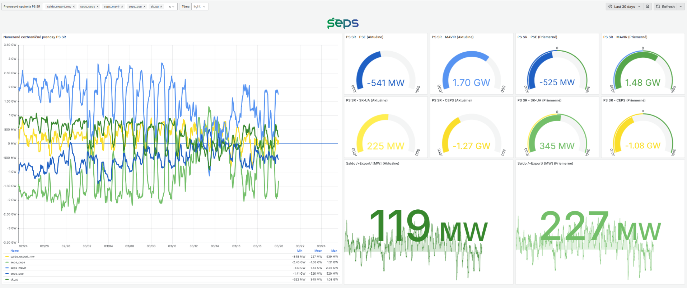
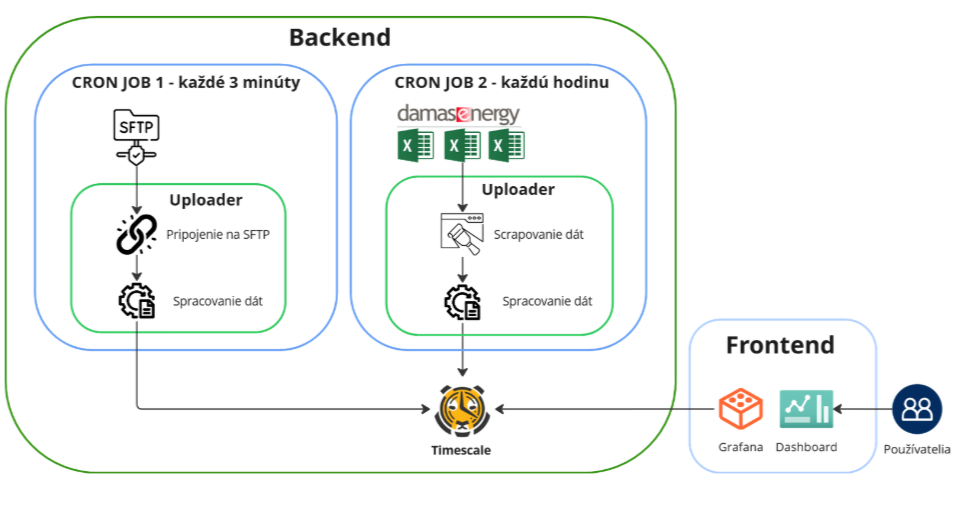

This project was developed as a team project during my Master's studies at FIIT STU, in collaboration with SEPS, a.s. (Slovak electricity transmission system operator). I worked on the project as a team of six with my classmates Juraj, Lenka, Patrik, Michal, and Martin ♡.
The goal was to design and implement EnergyDataHub — a dashboard system for visualizing real-time and historical electricity data in Slovakia. The dashboards run on Raspberry Pi devices connected to the SEPS internal network and display live energy metrics such as cross-border power transfers, generation by source, and system load. All of the data we used and are presented here, is publicly available.
The project covered the full stack — from data pipeline design to frontend visualization and physical device deployment.

This was my first project working directly with a real corporate client and real operational data. I learned how different the constraints are when you're building for an internal enterprise environment — reliability and fault tolerance matter a lot more than in a student project. The most interesting challenge was making the data pipeline robust enough that a network outage wouldn't cause gaps in the historical record.
If I were to revisit it, I'd spend more time on the dashboard UX — Grafana gives you a lot of power, but making it look polished takes deliberate effort.